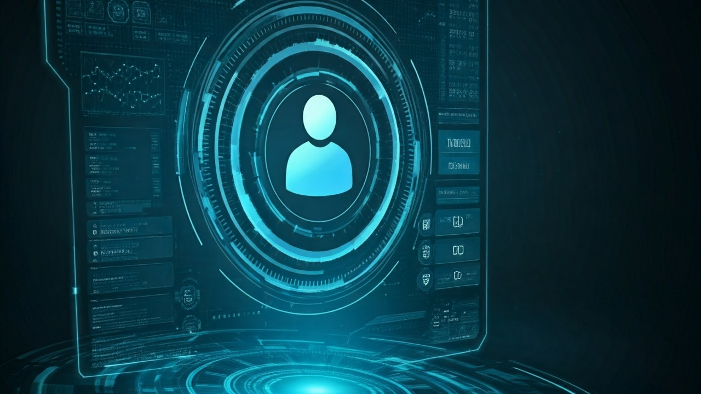
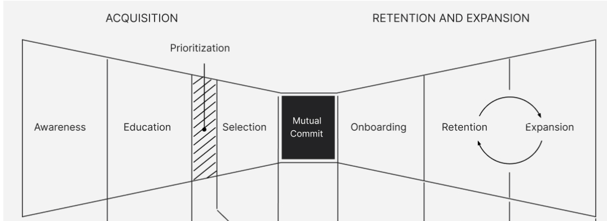
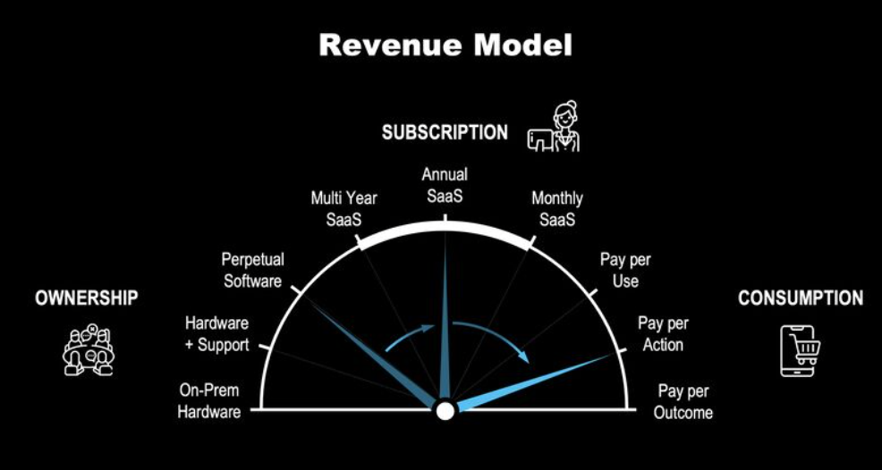
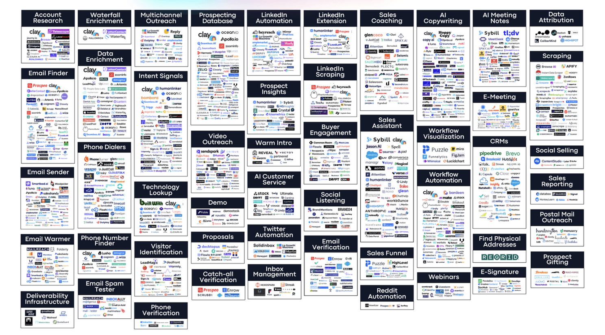
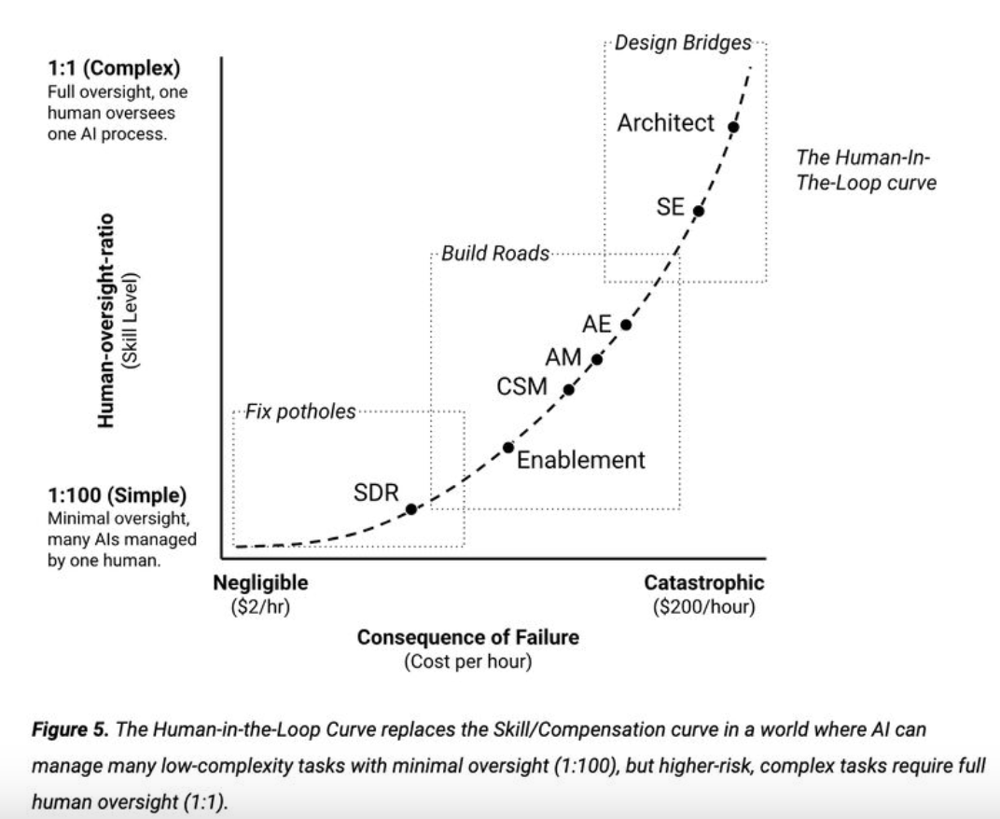

Last week I had written a post about the possibility of a new GenAI first architecture that would replace the current SaaS architecture, thus making the current wave of SaaS vendors 'legacy' and creating a new breed of products. This won't happen overnight and will take years but we have seen this movie play out with every big shift.
I was chatting with Salil Jain last week about what the CRM of the future would look like and I decided to put some of our conversation down on paper. Before we get into how to build a new CRM I want to talk about some big changes happening to the Sales and broader GTM function. I am a big fan of 🐶 Jacco van der Kooij and the Revenue Architecture work that he has done at Winning By Design and that is the right place to start as there are a few broader trends we need to align on.
Firstly the customer journey does not stop at the sale.
I really like the bowtie model that covers the entire customer journey beyond acquisition. As someone that has spent time in direct sales and various post-sales functions, this resonates with the reality I have experienced.

The second shift is in pricing
We saw the first shift from perpetual to subscription and AI is driving a shift from subscription to consumption. Salesforce came out with their $2 per conversation pricing as they navigate a world where user based pricing does not work. Again WBD and Jacco do a great job talking about this shift.

To net it out, companies don't make money unless their customers consume the software they purchased (use it, act with it or drive outcomes with it) which means that the customer journey does not stop with selling the software but extends to renewal and expansion and both of those have to be treated as first class citizens if companies want to make money.
The next data point to consider is that sales people spend only 30% of their time selling and most of the other time is doing admin and internal work. Add to this there is a proliferation of tools that Sales people have to use. If we look at the ecosystem of tools that have come up around Salesforce/Hubspot - Data tools (like Zoominfo and Apollo), Sales Engagement Platforms (like Outreach / Gong), Call Recording tools (like Gong, Chorus), Pipeline Management and forecasting tools (like Clari, Gong), Revenue Enablement tools (like Highspot, Seismic), Quoting tools (like Salesforce CPQ, Apptus), Contract Signature (Docusign, Adobe), Scheduling tools (Calendly, ChiliPiper), Sales Training & Onboarding tools (Lessonly), Sales intelligence & analytics (Gong, Tableau) etc.
If we look at the list of tools, these are just to help us sell the deal (the left side of the bowtie), the right side of the bowtie has Gainsight (CS Platform), Skilljar (Education), Zendesk (Support), Amplitude (Product usage), Qualtrics (Feedback and NPS), Zuora (Renewal) etc. Then there are a bunch of tools for the Marketing and lead gen side of things.
When I look at how GenAI is being used to tackle GTM, there are incumbents adding GenAI features to their existing products and there are pure plays. Here is a list from ColdIQ that includes both incumbents and pure plays.

VCs are pouring a ton of money into GenAI based startups like they did into SaaS in 2020 and that leads to the above. Just like we saw with SaaS, there will be a reckoning when the revenue does not follow this level of investment.
Jacco recently posted his perspective of how a 'Human in the loop' paradigm will disrupt GTM roles and it is a great read.

I think it is a great way to look at GTM role disruption but the question still remains for me about the underlying technology.
If we have 20 different tools, people won't adopt them. We need one unified platform.
We need a platform that tackles the entire customer journey. Pre-sales and post-sales.
Product usage and adoption data need to be first class citizens and not an after thought.
Manual data entry cannot be the basis for any future system we build.
If there is one thing that makes the CRM not a great system of record, it is due to manual data entry that is often incorrect and incomplete. At Gong we knew that 99% of sales conversations were not making it into the CRM. Unstructured interactions (Calls, Emails, Texts, WhatsApp, Zoom, F2F meetings) are going to be the basis of CRM 2.0. This is the data that GenAI needs for it to be tremendously valuable.
The biggest challenge is that not all customer interactions are captured and this is what needs to be tackled first if we want CRM 2.0.
I was recently talking to Anupam Nandwana CEO at P360 and they have tackled this for Pharma companies. Pharma being a regulated industry, sales people have to use company devices and no conversation with a doctor / patient etc. can happen on an unauthorized device. They've built technology that sits on the device that captures all the interactions and then they've used AI to update the CRM. Morgan Stanley did the same for their financial advisors. Another regulated industry where no conversations can happen that are not recorded.
As organizations realize the importance of capturing all customer interactions, it is going to be way cheaper for them to give every GTM employee a corporate mobile device and then capture all interactions. When I was at Salesforce, I had a corporate phone, so this is definitely doable.
Capturing customer interactions is going to be the fundamental building block for CRM 2.0
The other question that Salil Jain and I explored was which companies are best suited to build CRM 2.0 and here is my shortlist.
The big question is - what about Salesforce. I would never bet against Salesforce but I am not sure Agentforce is CRM 2.0 (I can be totally wrong about this) and I just feel like big shifts in architecture don't help the incumbents.